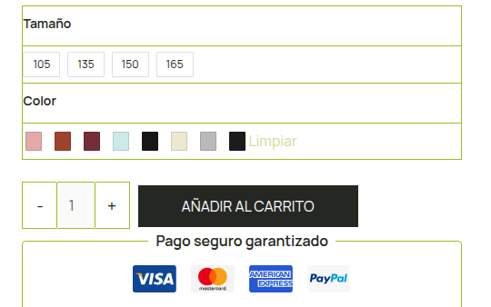

Cruce por dos claves
El SKU del producto de PrestaShop contra el de WooCommerce, y el ID de imagen de PrestaShop que seguía al principio del nombre de cada archivo migrado. 1835-scaled.jpg es la imagen 1835.
/ Caso · Migración y operativa de ecommerce
Tienda de decoración de dormitorios movida de PrestaShop a WordPress y WooCommerce. Los archivos llegaron. El significado no: qué imagen pertenecía a qué producto, y a qué color o acabado, se había perdido. Esto es cómo se reconstruyó esa relación desde la base de datos antigua, y todo lo que el catálogo necesitó después.
Qué es esta página: el trabajo está resumido a partir de dos procedimientos internos escritos mientras se hacía, para poder repetir los mismos pasos en el siguiente catálogo en vez de recordarlos. Los datos de cliente se quedan fuera; aquí hay método, cifras y la tienda pública.
/ En corto
El SKU del producto de PrestaShop contra el de WooCommerce, y el ID de imagen de PrestaShop que seguía al principio del nombre de cada archivo migrado. 1835-scaled.jpg es la imagen 1835.
Un único SELECT contra la base de datos de PrestaShop recuperó la relación histórica entre imagen, producto y combinación. Sin UPDATE, DELETE, INSERT, ALTER ni DROP.
Base de datos completa y /wp-content/uploads antes de cualquier importación masiva, y luego un CSV de prueba de dos productos revisado a mano antes de lanzar el archivo entero.
No por SKU. Un catálogo migrado arrastra SKU vacíos y duplicados, y una importación que se apoye en ellos escribe el dato correcto en el producto equivocado.
El plugin de swatches deja de funcionar pasado un umbral. Ese umbral se subió solo para ese producto y no de forma global, así que el resto del catálogo conserva el valor seguro.
Cada cambio masivo vivió en un fragmento: acotado, reversible y desactivado en cuanto la pasada única terminó. El tema no se tocó.
/ 01 · El problema
Los productos y las imágenes ya estaban en WordPress y ya estaban asociados a WooCommerce. Lo que no había sobrevivido era la relación: PrestaShop sabía que una imagen concreta pertenecía a una combinación concreta de talla, color y acabado, y WooCommerce solo sabía que existía un archivo. Los títulos y los ALT eran genéricos o estaban vacíos, los nombres de archivo eran números pelados, y varios productos demo anteriores a la migración seguían en el catálogo contaminando cualquier operación masiva.
Así que el trabajo no era volver a migrar. Era recuperar el significado antiguo y reescribirlo sobre la tienda nueva, sin tocar ni un precio, ni un stock, ni un atributo, ni una variación.
/ 02 · El cruce
Cada sistema tenía una parte de la respuesta. El trabajo fue juntarlas en un único archivo de importación que una persona pudiera auditar antes de que se escribiera nada.
| Fuente | Qué aporta |
|---|---|
| WP All Export | La estructura actual en WordPress: ID de producto, SKU, tipo, padre, y de cada imagen su ID, URL, nombre de archivo, ruta, título, ALT y leyenda. |
| Exportador de WooCommerce | Datos de producto y atributos, para confirmar la identidad del producto antes de cruzar nada. |
| SQL de PrestaShop | La relación histórica: ID de imagen, posición, portada, leyenda, ID de combinación y los pares de atributos que hay detrás. |
| Prefijo del archivo | El ID de imagen de PrestaShop sobrevivió a la migración dentro del nombre del archivo, que es lo que hace posible cruzar a nivel de imagen. |
Resultado del cruce: 773 imágenes cruzadas, 740 con correspondencia clara, 33 marcadas para revisión manual y ninguna sin correspondencia. Veintitrés registros demo y duplicados anteriores a la migración quedaron excluidos por una regla, no a mano: sin SKU, fuera de alcance.
/ 03 · Protocolo de seguridad
Una importación masiva sobre una tienda en producción es una puerta de un solo sentido si sale mal. Estas quedaron fijadas de antemano para no tener que decidir nada con prisa.
| Regla | Por qué |
|---|---|
| Copia primero | Base de datos completa y /wp-content/uploads antes de cualquier operación masiva. |
| Dos productos primero | Lanzar la importación con un CSV de dos productos, revisar el resultado a mano y solo entonces ejecutar el archivo completo. |
| Clave por Product ID | Los SKU de un catálogo migrado pueden estar vacíos o duplicados. El ID de producto de WordPress no. |
| Solo imágenes | Actualizar título y ALT de imagen. Nunca título de producto, contenido, precio, stock, atributos, variaciones, taxonomías ni campos personalizados. |
| Nunca borrar | Cualquier opción que elimine o modifique productos ausentes del CSV se queda desactivada. |
| Renombrar al final | El nombre físico del archivo solo se cambia una vez confirmados los títulos y los ALT. |
/ 04 · Después de la migración
Con los metadatos correctos, lo que quedaba era la tienda: que un catálogo de productos variables se comportara como una tienda y no como una exportación de base de datos.
| Cambio | Qué implicó |
|---|---|
| Renombrado masivo | Media File Renamer genera el nombre físico desde el título del adjunto, sin tocar títulos ni ALT. Verificado en galerías de producto, miniaturas y páginas de Elementor. |
| Stock simplificado | Cantidad exacta oculta en la tienda y 20 unidades escritas en cada variación, no solo en el producto padre. |
| Medida antes que color | Orden de atributos invertido en todo el catálogo con un snippet de ejecución única, por lotes desde el listado de productos, y desactivado después. |
| Una medida por defecto | Medida predeterminada en todos los productos variables compatibles, para que la ficha abra en un estado comprable. |
| 242 variaciones | Un producto superaba el umbral del plugin de swatches. El límite se subió solo para ese ID, se borraron transitorios y se comprobó otro producto variable para confirmar que el filtro no se había escapado. |
| Swatches etiquetados | Label position activado para que cada grupo se lea como Tamaño, Color frontal y Color reverso en vez de tres filas anónimas de cuadrados. |
| Higiene de catálogo | Registros duplicados de la migración eliminados, productos reasignados a su categoría correcta, colores de muestra completados y enlaces sociales apuntando a los perfiles reales. |

/ 05 · Qué demuestra
| Afirmación | Evidencia |
|---|---|
| Recuperación de datos, no intuición | La relación de imágenes se reconstruyó desde la base de datos de origen con una consulta de solo lectura, y la tasa de acierto está declarada: 740 claras, 33 marcadas, 0 sin correspondencia. |
| Seguro sobre una tienda viva | Copias, ensayo con dos productos, identificación por ID y alcance limitado a imágenes. No se escribió en precio, stock ni variaciones. |
| Arreglos acotados | El umbral de swatches se subió para un producto, no de forma global. Los snippets de ejecución única se desactivaron tras su única pasada. |
| Repetible | Los dos procedimientos están escritos, incluidos el SQL, el mapeo de campos y un checklist operativo, así que el siguiente catálogo no empieza de cero. |
| Responsabilidad, no tickets | Migración, metadatos, catálogo, variaciones y comportamiento de la tienda fueron un trabajo continuo y no una cola de peticiones sueltas. |
/ Siguiente
Las migraciones son el momento en el que una web se rompe por dentro sin avisar, y el daño aparece meses después. Esta queda documentada para poder repetirla, no para recordarla. Si es el tipo de trabajo que necesitas, escríbeme.